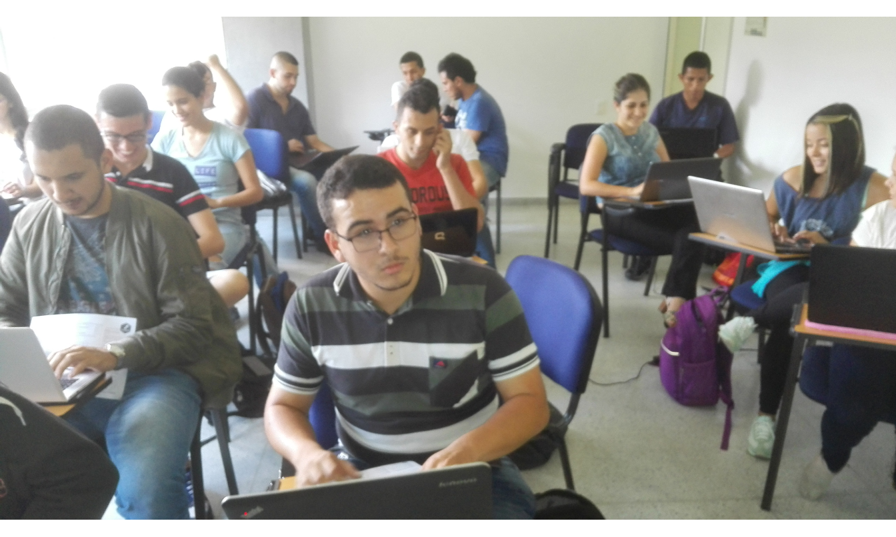

Son grupos donde se adquieren instrumentos para el desarrollo de investigaciones en un ambiente de tertulia y diálogo, y en donde se aprende a aprender y se descubre nuevo conocimiento y métodos de aprendizaje.
Cualquier estudiante que pase la prueba de admisión.
Fomentar un espacio de discusión que genere una actitud reflexiva y crítica sobre problemas relacionados con estadística computacional.
Proponer y ejecutar proyectos de investigación para las convocatorias del Programa Nacional de Semilleros de Investigación de la Universidad Nacional de Colombia.